end-to-end encrypted · twelve games · chat
Pull up a chair, play a friend.
kibitz is twelve games — chess, backgammon, checkers, reversi, Connect Four, Gomoku, Hex, Dots & Boxes, Go, Xiangqi, a provably-fair Battleship, and Gin Rummy dealt by a shuffle neither player nor the server can rig — with a chat alongside, over one end-to-end-encrypted session. You get a code phrase like lion-42-maple, a share link, and a QR; the first friend to join sits down as your opponent, everyone after that kibitzes. The relay that carries it all can never read a move, a card, or a message.
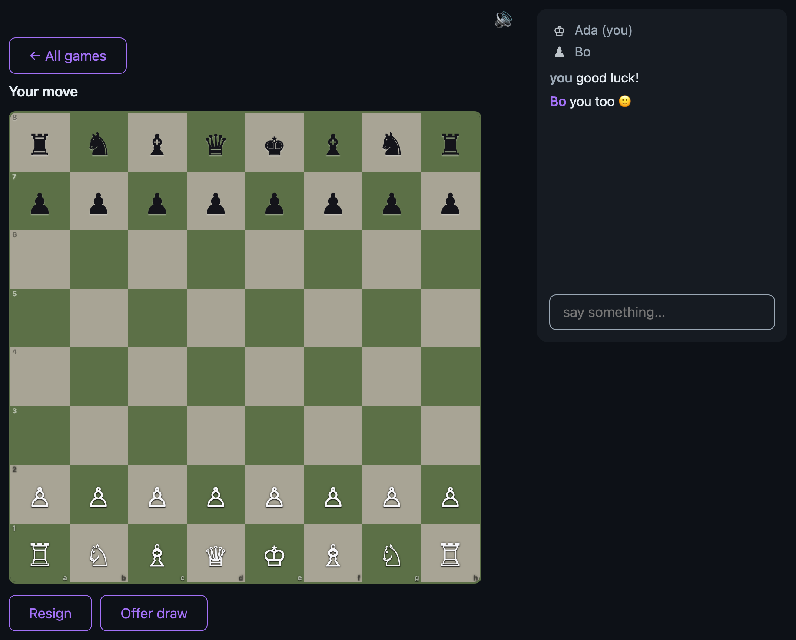
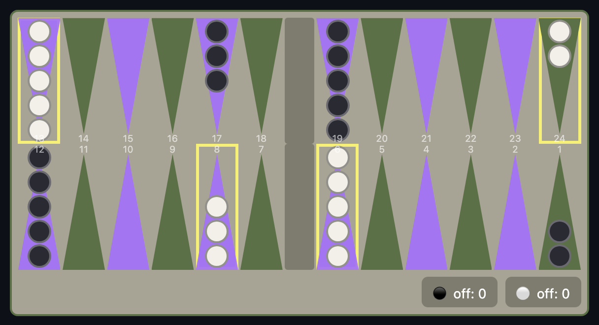
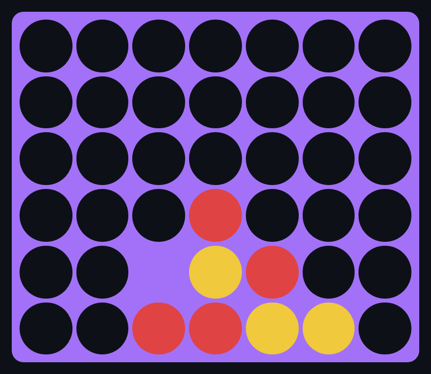
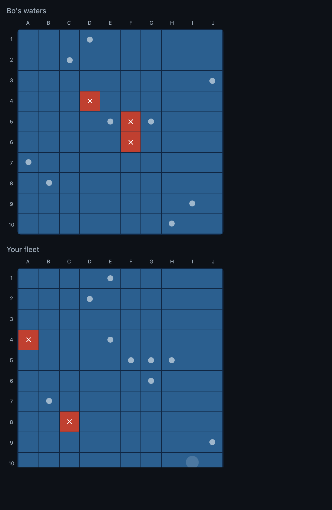
what's on the table
Twelve games, one encrypted session.
Games start on demand from a picker and run side by side — play a chess game and a backgammon game at once, chatting the whole time. Every rules engine is pure Go, compiled to WebAssembly, and runs identically on both screens. Eleven of the twelve have a "Hard" computer opponent for solo play.
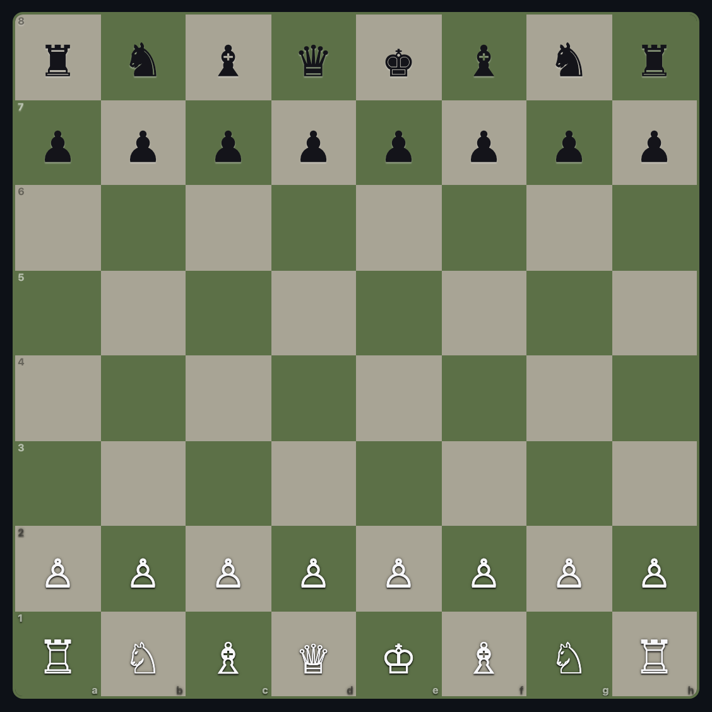
Chess
The full ruleset — castling, en passant, promotion, draws and resignation — via the maintained corentings/chess engine. Kibitzers watch and heckle in chat.
Backgammon
With a commit-reveal dice roll: each roll is committed then revealed, so neither side — nor a spectator — can doctor the dice. Forced moves and bear-off, all validated both sides.
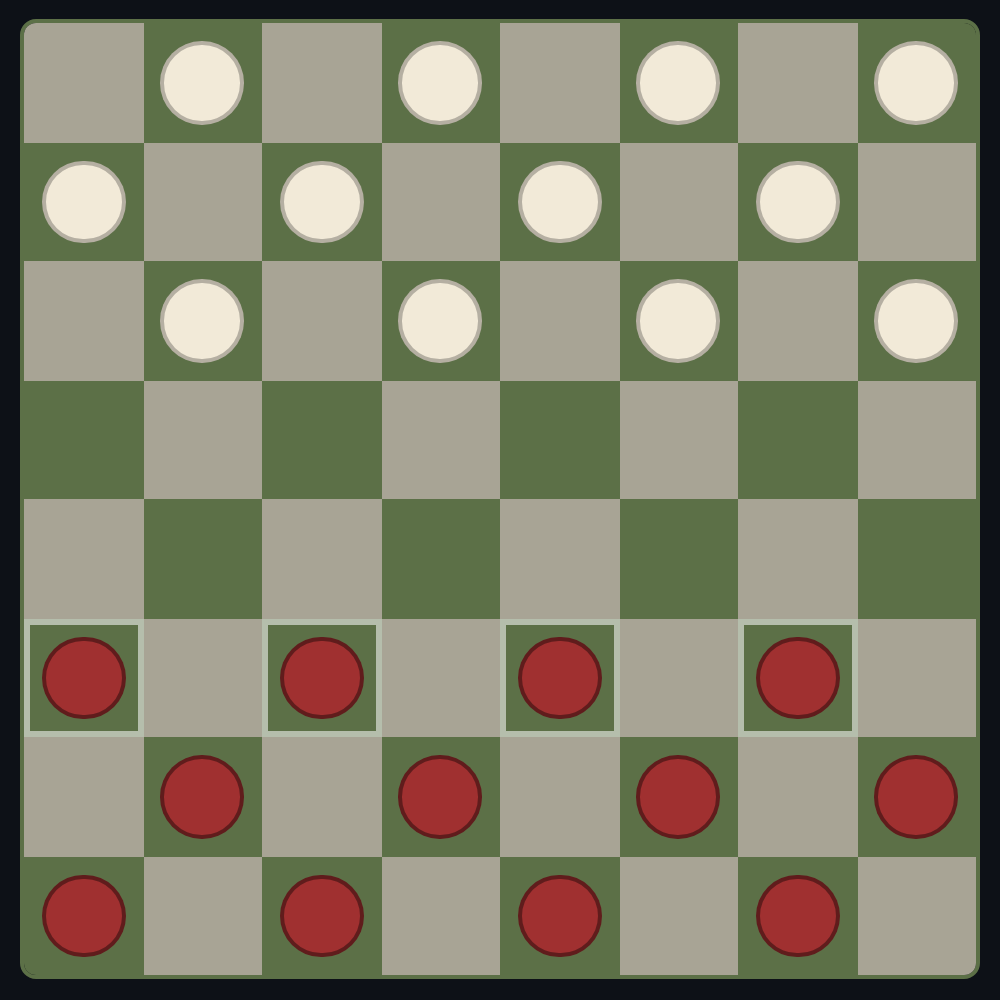
Checkers
American draughts with forced captures — the engine walks every capture chain, so a jump you're owed is a jump you must take.
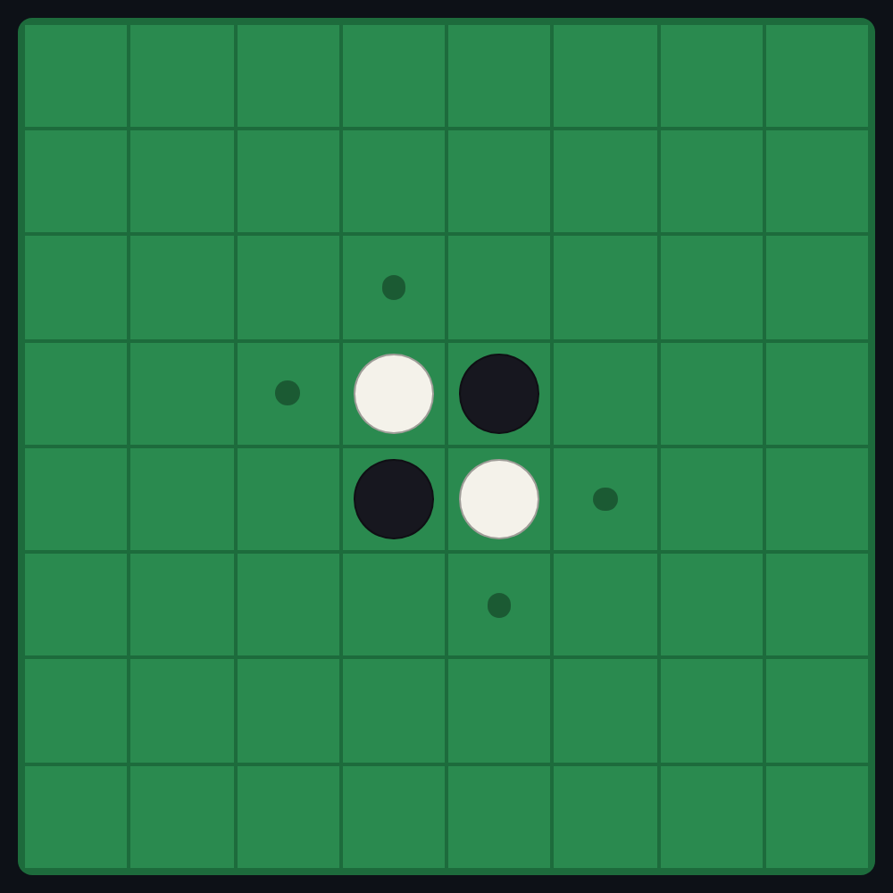
Reversi
Othello, flips and all. Legal moves and passes are computed by the shared engine, never asserted — so both boards always agree on the count.
Connect Four
Drop, connect, gloat. A quick one between the longer games — with the disc-drop animation and a hover ghost showing where your piece will land.
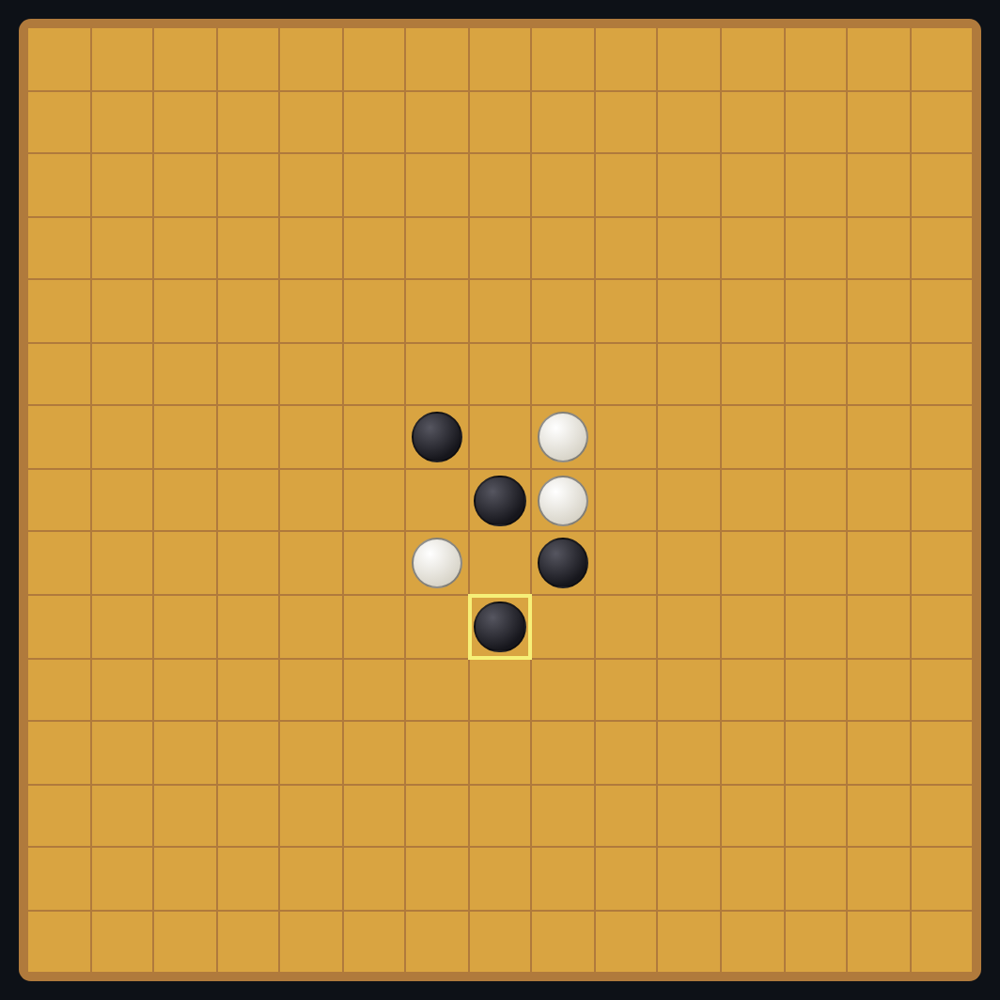
Gomoku
Five in a row on a 15×15 board. Easy to start, sharp the moment you spot a double threat — place a stone, block a line, and the last move glows.
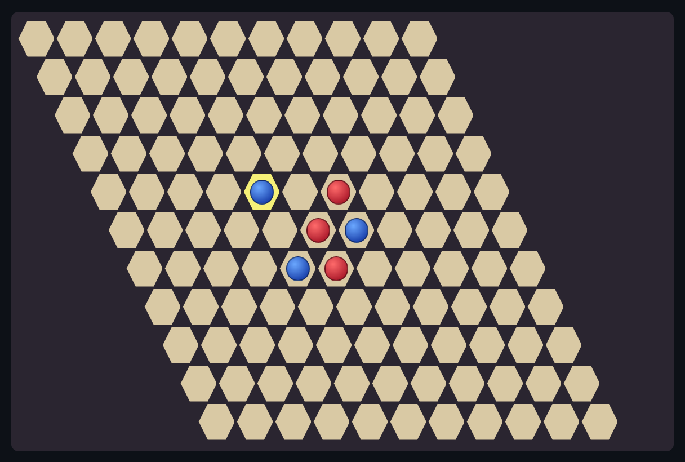
Hex
Connect your two edges across a rhombus of hexagons — red top-to-bottom, blue side-to-side. Hex can't be drawn: somebody's chain always gets there first.
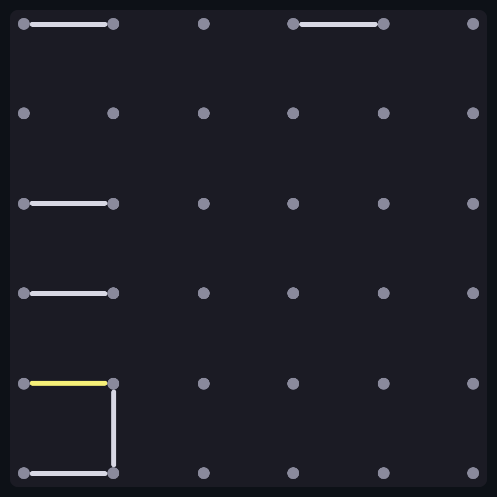
Dots & Boxes
Claim edges; close the fourth side of a box and you score it and move again. The whole game turns on who's forced to open the next chain.
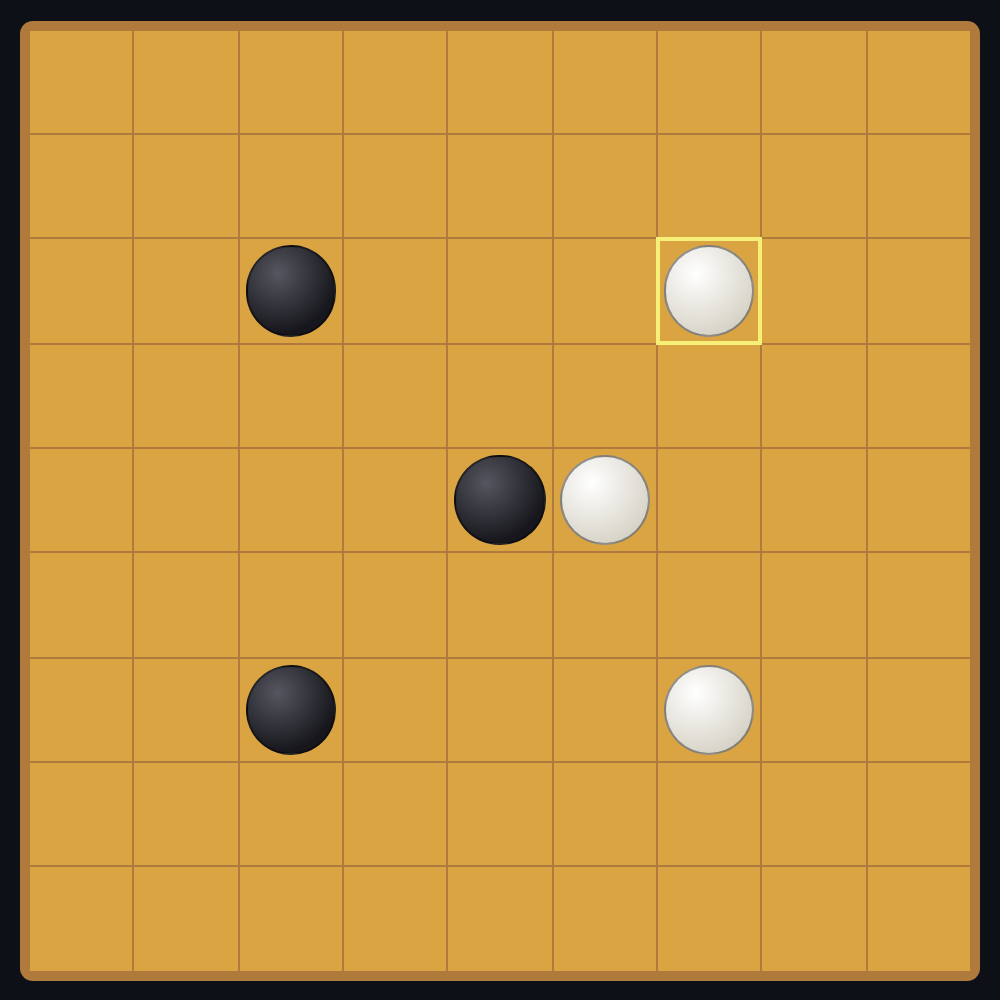
Go
Go on a 9×9 board — surround territory, capture stones, pass when nothing's left to gain. Suicide and ko are enforced; scored Chinese-style with komi.
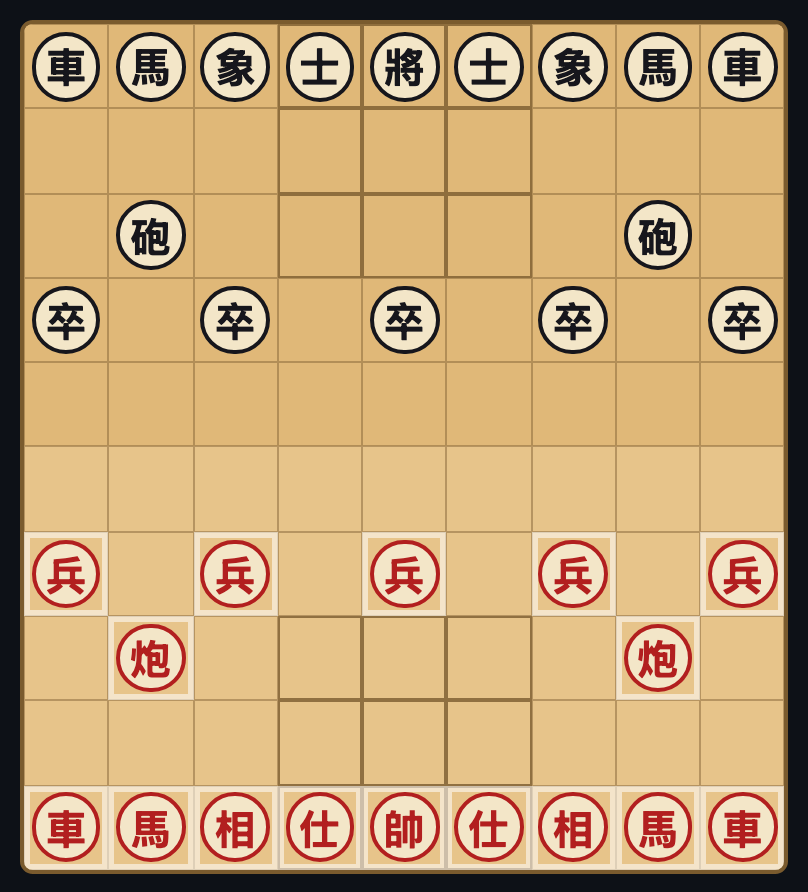
Xiangqi
Chinese chess, the full ruleset — the river, the palace, cannons that leap to capture, and the flying-general rule. Give check, force mate.
Battleship
Provably fair: each cell of your fleet is a cryptographic commitment made before the first shot. "Sunk" becomes a public derivation — there's no message left to lie in.
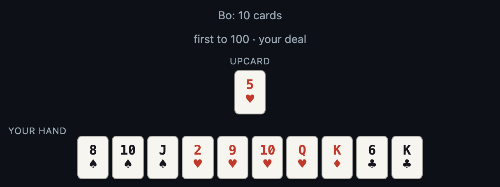
Gin Rummy
Dealt by a "mental-poker" shuffle: the two of you jointly shuffle so neither player — nor the relay — knows the deck or the other's hand, yet every card is provable at showdown. Meld, knock, and play a match to 100.
provably fair
Two games can't be cheated — even by their own players.
Encryption stops the relay from reading a game. But hidden-information games raise a harder question: how do you trust your opponent, with no referee in the middle? Two of kibitz's games answer it with cryptography instead of trust — and backgammon's dice use the same commit-reveal trick.
Battleship — commit before you fire
Each cell of your fleet is a cryptographic commitment locked in before the first shot. Every "hit", "miss", and "sunk" is then a public derivation checked against those commitments — there's no message left to lie in, and no hidden server that could. Move your ships after the fact and the maths simply won't verify.
Gin Rummy — a shuffle nobody controls
The deck is shuffled by mental poker: you and your opponent each encrypt and shuffle it with a commuting cipher, so neither of you — and certainly not the blind relay — knows the order or the other's hand. At showdown you reveal your keys, and the deck is proven to decrypt to a fair, untouched 52 cards. A dealerless deal with no dealer to trust.
All three build on the same primitive: commit to a secret first, reveal it later, and let everyone check the maths.
how it's private
The relay is blind.
Your code phrase never reaches the server — it seeds a PAKE handshake between you and each friend. From that, everyone shares a group key; every move, dice roll, dealt card, and chat line is sealed with XChaCha20-Poly1305 before it leaves the tab. The relay only forwards opaque frames between participants: it sees connection counts and a session id that's a one-way hash of the phrase, and nothing else. Self-host the one-binary relay or use the hosted one — either way it can't read a thing.
// the phrase is the secret — it never // travels; the session id is a hash sessionID = SHA-256("kibitz/v1" ∥ phrase)[:16] // PAKE → pairwise key → group key key = HKDF(pake.SharedKey()) seal = XChaCha20Poly1305(key, frame, AD: sessionID ∥ version ∥ sender)
# what the relay can see session a1b2c3… (hash, not the phrase) members 2 players + 3 kibitzers frames ▓▓▓ opaque ciphertext ▓▓▓ # what it can never see moves·dice·cards·chat·names ✗ sealed
Games sync both-sides-validate — each client runs the same deterministic engine and checks a state hash, so there's no authoritative server to trust or to breach. Read the full threat model ↗.